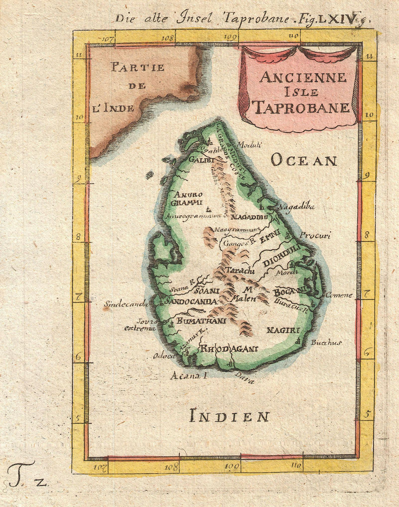

Anuradhapura
Badulla
Colombo
Galle
Gampaha
Hambantota
Jaffna
Kaluthara
Kandy
Kegalle
Kilinochchi
Kurunegala
Mathale
Matara
Monaragala
Mullativu
Nuwara Eliya
Polonnaruwa
Puttalam
Rathnapura
Trincomalee
Vavuniya
In Sri Lanka, districts (Sinhala: දිස්ත්රික්ක, romanized: Distrikka, Tamil: மாவட்டம், romanized: Māvaṭṭam) are the second-level administrative divisions, and are included in a province. There are 25 districts organized into 9 provinces. Each district is administered under a district secretary, who is appointed by the central government. The main tasks of the district secretariat involve coordinating communications and activities of the central government and divisional secretariats. The district secretariat is also responsible for implementing and monitoring development projects at the district level and assisting lower-level subdivisions in their activities, as well as revenue collection and coordination of elections in the district. A district is divided into a number of Divisional Secretary's Divisions (commonly known as DS divisions), which are in turn subdivided into 14,022 grama niladhari divisions. There are 331 DS divisions in the country.
History : The country was first divided into several administrative units during the Anuradhapura Kingdom. The kingdom was divided into three provinces; Rajarata, Ruhuna and Malaya Rata. These were further subdivided into smaller units called rata. Over time, the number of provinces increased, but the second-level administrative division continued to be the rata. However, with the country eventually being divided into more than one kingdom and with foreign colonial missions landing and taking parts of the country under their control, this structure began to change. The territory of the Kotte Kingdom was organized into four disavas, which were further subdivided into forty korales. The korales had their own civil and military officials with a small militia. The Jaffna kingdom appears to have had a similar administrative structure to this with four provinces. When the Portuguese took over parts of the country after their arrival in 1505, they maintained more or less the same administrative structure followed by Sri Lankan rulers. During the Dutch rule in the country, the terrain under their control was divided into three administrative divisions. These were subdivided into disavas as in earlier systems. The British initially continued this system, but following reforms in 1796 to 1802, the country was divided according to ethnic composition. This was abolished by the Colebrook–Cameron reforms in 1833 and a legislative council was created,[16] making the island a politically and administratively single unit. Five provinces were created, later expanded into nine, and these were subdivided into twenty-one districts. These districts were administered by officials known as Government Agents or Assistant Government Agents. In 1955, the district replaced the province as the country's main administrative unit. Ampara District was created in April 1961, followed by the creation of Mullaitivu and Gampaha districts in September 1978 through a new constitution, which also reintroduced the province as the main administrative unit. The last district to be created was Kilinochchi in February 1984, and the current constitution (that of 1978) states that the territory of Sri Lanka consists of 25 administrative districts. These districts may be subdivided or amalgamated by a resolution of the Parliament of Sri Lanka.
15 Top-Rated Tourist Attractions in Sri Lanka
1. Yala National Park
This is where you can do a safari experience Sri Lankan style. The huge national park borders the Indian Ocean and has a wide range of different ecosystems. From the marine environment of the coastline to grasslands to tropical rainforests inland. The most popular animals to see here are elephants, leopards, and crocodiles. There are also over 200 bird species that make their home in the park area, including several endemic to Sri Lanka. Aside from the fauna and flora, the park is home to two historic and very popular religious pilgrimage sites. The temples of Situlpahuwa and Magul Vihara draw four times as many visitors to the park as the animals do. Yala National Park is on the southeast coast of the island near the city of Hambantota.
2. Colombo Lotus Tower
One of the best tourist attractions in Sri Lanka is also one of the country's newest. The Colombo Lotus Tower opened in the fall of 2019 as South Asia's tallest, free-standing structure. The lotus bulb-inspired tower, which overlooks the entire city and the Indian Ocean, is 1,168 feet (368 meters) tall and offers the city's best views and photo ops. There's a shopping mall in the base of the tower, then you can take super fast elevators up to both indoor and outdoor observation areas. There's also a revolving restaurant at the top, which is a very popular spot for romantic dinners. The exterior of the tower is covered with LED lighting, and they do light shows each evening and on special holidays.3. Sri Lanka National Museum
This large museum is also called the National Museum of Colombo, and it tells the fascinating story of the Sri Lankan people and their culture. The museum collection includes various kinds of things, from artifacts to artwork along with jewelry, coins, money, arms, and crafts. The museum has multiple levels and showcases both cultural and natural exhibits. Everything is shown chronologically, starting with the island's prehistoric history. You'll find the museum in central Colombo, near Viharamahadevi Park. It's housed in a Victorian colonial building that was purpose-built for the museum and opened in 1877.4. Pinnawalla Zoo
The city's original Colombo Zoo is located in the Dehiwala area. It's one of the oldest zoos in Asia. The zoo had a problem in that it was land-locked as Colombo grew, and so a second zoo was opened outside Colombo in Pinnawalla. This large animal park allowed the zoo's management (both zoos are run by the government) to create an ideal place for animals, starting with a blank sheet of paper and almost unlimited space. The zoo has a big leopard compound with a large leap (pack) of leopards. There's also a deer enclosure, which has multiple varieties of deer all living in the same, large natural environment. Because it can be a long drive to the zoo (three hours from Colombo), visitors have a petting zoo to experience, before they even buy tickets. There are birds (ducks, turkeys, swans, and pea fowl), turtles, rabbits and other animals to meet as soon as you arrive.5. National Museum of Natural History
After you've visited the Sri Lanka National Museum and learned about Sri Lanka's cultural history, head to the nearby National Museum of Natural History to trace its physical, wildlife, and natural history. This museum shows the country's incredible indigenous natural history, with examples of animals, plants, and minerals that are endemic to the South Asian island. The island's ancient and prehistoric history is also on display, with some cool fossils and skeletons including those of dinosaurs. It's across from Viharamahadevi Park in central Colombo Yala National Park is on the southeast coast of the island near the city of Hambantota.6. Pinnawalla Elephant Sanctuary
Located near the Pinnawalla Zoo, about three hours outside Colombo, this large facility was set up in 1975 to care for orphaned elephants found in the wild. Asian elephants are native to Sri Lanka, and it's a fascinating tourist attraction that allows visitors to interact with these amazing creatures. It's an orphanage for elephants but also a nursery and a captive breeding ground as well. They have the largest population of captive Asian elephants in the world, hovering around 100 animals. You can really learn about elephants here — visitors can watch the babies being cared for and fed with bottles. They can help feed the adults and also watch them get their daily bath in the river. The females and young elephants live as a herd and roam freely. They are led to the river twice a day to drink and bathe7. Gangaramaya Temple
Located in Central Colombo near Bere Lake, this 19th-century Buddhist temple complex interestingly includes a vintage car museum. There's a cool Mercedes and a very rare Rolls-Royce Ghost from the 1920s. The temple is also a religious museum with examples of religious coins, jewelry, and sculpture. The temple was created around a sacred tree to house a sacred relic, a lock of the Buddha's hair. Each year during the Poya or full moon ceremony in February, there's a festival and procession around the area led by the temple's resident elephant8. Red Mosque
A visit to the striking red and white brick Red Mosque (called "Jami Ul-Alfar Masjid") will yield some insight into the local practice of Islam, as well as some awesome Instagram pics. Inside, the mosque showcases typical religious artwork and design, but it's the outside that really makes it extra special. The exterior red and white bricks are arranged in sometimes eye-fooling designs of spirals, swirls, and alternating patterns. The impact has also made the mosque a visual landmark, easy to spot from arriving ships. The minarets of the mosque are topped with onion-shaped domes, reminiscent of Red Square. The style is called "Indo-Saracenic," and it was a popular architectural style in Asia in the early 19th century when this mosque was built.9. Sigiriya
This ancient rock fortress was once the mountaintop palace of the island's king. Believed to have been constructed during the 4th and 5th centuries CE, the palace ruins are at the top of a 660-foot (220-meter) rock formation. The sides of the mountain had giant frescoes painted on them, and halfway up the mountain there's a giant gateway carved in the shape of a lion. The structure's name means lion rock in ancient Sanskrit. The palace above and the city complex below are one of the world's most important examples of urban planning in the first millennium. The ruins are near the town of Dambulla in the Central Province of the country
10. Adam's Peak
This large, sacred mountain (7,359 feet/2,243 meters), is topped with a rock formation that has significance to many religions. At the summit, there is a large boulder with an imprint that looks like a footprint. To Buddhists, it's the footprint of Buddha; to Muslims and Christians, it's the footprint of Adam (thus the site's Western name); and to Hindus, it was created by the deity Shiva. Whatever your belief, Adam's Peak is a beautiful natural site to visit, and it's a cool adventure to climb the mountain. The pilgrimage path is mainly steps and stairs, and it takes at least a few hours each way. The mountain is accessed from routes beginning in the village of Nallathanniya in central Sri Lanka. The best times to climb it are between December and May. There are six trails leading to the summit, with varying journey times and varying degrees of difficulty. The paths are lighted at night, and the activity is great for families, as children can easily do it, too. There are rest stops and food vendors along the way11. Golden Temple of Dambulla
Throughout Sri Lanka there are natural caves that have been enlarged and excavated to be turned into cave temples. Like other temples, they honor Buddha and other deities (and a few kings) with large statues and relics. The Dambulla cave temple is a UNESCO World Heritage site. It's the largest complex in the country and the best preserved. Of particular interest are the beautiful, now-preserved and conserved colorful wall murals that decorate the cave walls. Aside from the cave temples, there is a large, golden Buddha statue at the base of the mountain, giving the site its other name, the Golden Temple of Dambulla. Dambulla is about two hours outside ColomboThis is where you can do a safari experience Sri Lankan style. The huge national park borders the Indian Ocean and has a wide range of different ecosystems. From the marine environment of the coastline to grasslands to tropical rainforests inland. The most popular animals to see here are elephants, leopards, and crocodiles. There are also over 200 bird species that make their home in the park area, including several endemic to Sri Lanka. Aside from the fauna and flora, the park is home to two historic and very popular religious pilgrimage sites. The temples of Situlpahuwa and Magul Vihara draw four times as many visitors to the park as the animals do. Yala National Park is on the southeast coast of the island near the city of Hambantota.
12. Galle Dutch Fort
This 16th-century Dutch fortress complex has been turned into a large tourist attraction. Originally built by the Portuguese in the 16th century, most of the structures date to the Dutch colonial period in the 17th century. More than a fort, it's a small fortified village, with homes, churches, a mosque, and lots of shops all within the fortress walls. You can visit the fort and the lighthouse, and there are several museums on the site along with big shopping areas. The Fort, on the southwest coast Sri Lanka, about two hours south of Colombo, is a popular tourist destination with a lot of boutique hotels, some located within the fort's walls.13. Pedro Tea Estate
Tea has an important financial history in Sri Lanka since it was first planted by the British on the island in the 19th century. Before that, important crops on the island, then known as Ceylon, were first cinnamon, followed by coffee. Since that time, the country has had a reputation for producing some of the best teas in the world. You can visit a Victorian-era tea plantation and its vintage factory at the Pedro Tea Estate. The estate is in Nuwara Eliya, in central Sri Lanka. You see the whole process — how the tea is grown, then how it's processed and finally graded and shipped around the world. Visitors also have a chance to taste some of the country's legendary teas.14. National Museum of Kandy
Kandy is a city in the central part of Sri Lanka and is important, as it was the kingdom's last capital city before the colonial era. The beautiful city and its unique history can be explored at the National Museum of Kandy. The main part of the museum is housed in what was the home of the king's harem; additional exhibits are inside the former palace. The museum is filled with artifacts that tell the story of the Kandian era, the time between the 15th and 18th centuries, when the area maintained its independence despite colonization of other parts of the island. Aside from historic objects and artifacts, the museum has an incredible collection of Sri Lankan art, as it's an official repository for native artwork.15. Temple of the Tooth
Also in the city of Kandy (right next to the National Museum of Kandy), this temple, and the relic it houses, is one of the most sacred places on Earth for those of the Buddhist faith. The relic, believed to be a tooth of the Buddha, also has an influence on the politics of Sri Lanka, as whoever possesses the tooth is supposed to be the rightful ruler of the country. The Temple of the Tooth is part of the royal palace complex. There are rituals performed at the temple three times a day, with a special ritual bathing of the relic on Wednesdays. The holy water that results from the bathing is believed to have healing powers.